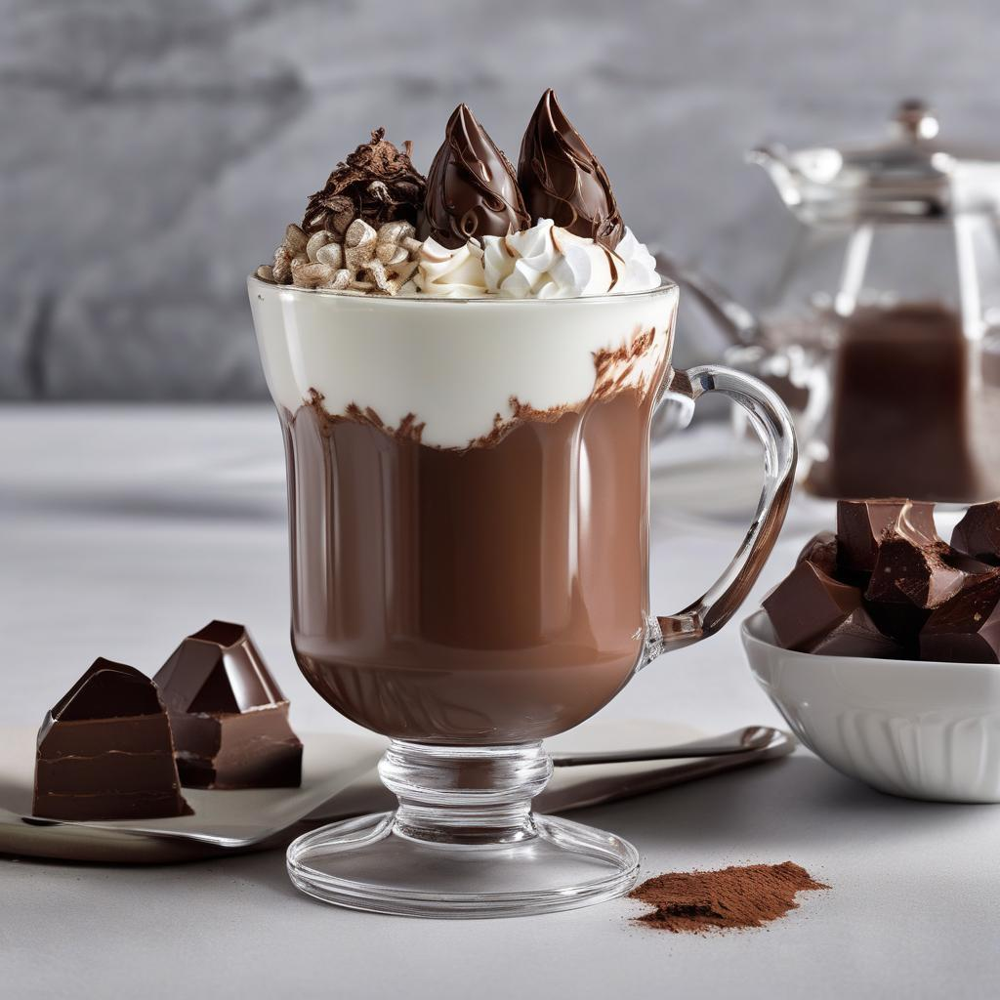
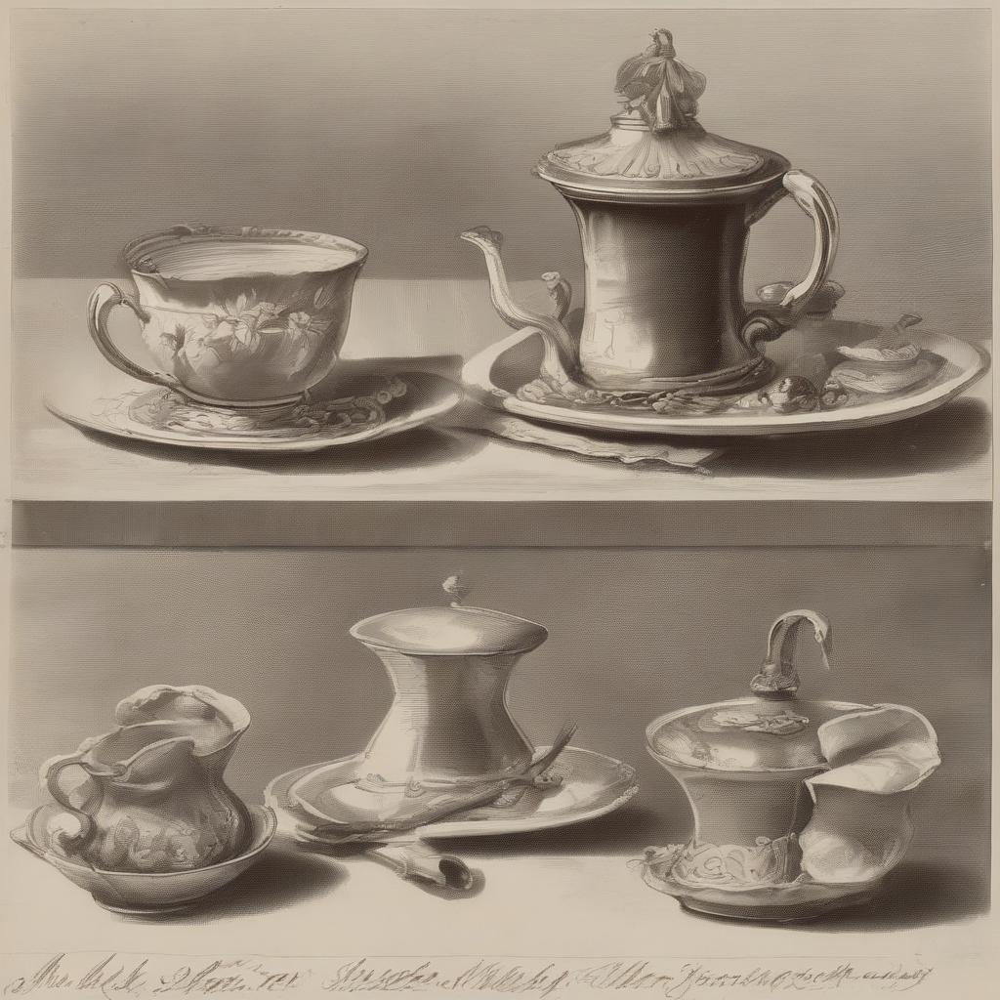
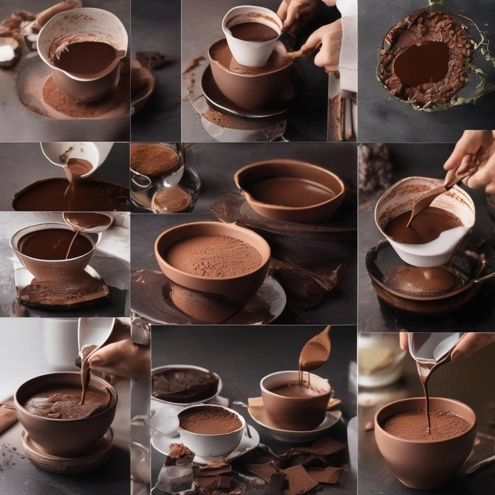

Como fazer fondue
Uma experiência gastronômica que transcende o tradicional: descobrindo novos sabores e texturas
Em um cenário gastronômico cada vez mais diversificado, o fondue permanece como um símbolo intemporal de convivência e prazer à mesa. Esta tradicional iguaria suíça, que conquistou paladares ao redor do mundo, encontra-se hoje em um momento de reinvenção, onde técnicas clássicas se encontram com abordagens contemporâneas e ingredientes surpreendentes.
Nas próximas páginas, embarcaremos em uma jornada sensorial que vai além do fondue convencional. Exploraremos não apenas as receitas tradicionais, mas também combinações inesperadas, técnicas de preparo inovadoras e apresentações que transformam um simples fondue em uma experiência gastronômica memorável.

A História do Fondue: Das Montanhas Suíças para o Mundo
O fondue, em sua essência, nasceu da necessidade e da criatividade dos habitantes dos Alpes suíços. Durante os rigorosos invernos, quando as comunidades ficavam isoladas, os moradores desenvolveram uma forma engenhosa de utilizar queijos e pães endurecidos, transformando-os em uma refeição reconfortante e social.
No Brasil, o fondue ganhou popularidade nos anos 1970, inicialmente servido em restaurantes sofisticados, e logo se tornou sinônimo de reuniões acolhedoras e momentos especiais. Com o tempo, nossa criatividade tropical incorporou ingredientes locais e criou variações únicas que enriqueceram ainda mais esta tradição.

Os Fundamentos do Fondue Perfeito
A magia do fondue está na qualidade dos ingredientes e na precisão das técnicas. Cada elemento deve ser cuidadosamente selecionado e preparado para criar uma harmonia de sabores e texturas.
Os Queijos Fundamentais
A base de um fondue de queijo tradicional combina Gruyère e Emmental em proporções específicas. O Gruyère oferece profundidade e complexidade, enquanto o Emmental traz cremosidade e o característico sabor suave. A inclusão de outros queijos, como Vacherin Fribourgeois ou Beaufort, pode adicionar nuances interessantes ao sabor final.
O Vinho Perfeito
O vinho branco não é apenas um ingrediente, mas um elemento crucial que determina a textura e o sabor do fondue. Um Chasselas suíço ou um Chablis francês são escolhas tradicionais, mas vinhos locais de boa acidez também podem funcionar extraordinariamente bem.

Equipamentos e Utensílios: O Que Você Vai Precisar
Para preparar um fondue de qualidade, é fundamental contar com os equipamentos e utensílios adequados. Nesta seção, listamos o que você vai precisar ter em sua cozinha.
Rechaud e Panelas
Um bom rechaud é essencial para manter o fondue aquecido durante a refeição. Panelas de cerâmica ou ferro fundido são as mais indicadas, pois distribuem o calor de maneira uniforme.
Utensílios para Fondue
Garfinhos longos, colheres de pau e espátulas são indispensáveis para servir e misturar os ingredientes no fondue. Prefira utensílios com cabos longos para evitar queimaduras.
Pratos e Talheres
Pratos rasos e talheres adequados são importantes para uma boa experiência à mesa. Certifique-se de que os pratos sejam grandes o suficiente para acomodar o pão e os acompanhamentos.
Técnicas de Preparo: Do Básico ao Avançado
Preparar um fondue pode parecer uma tarefa simples, mas existem técnicas que podem elevar sua iguaria a um novo patamar. Nesta seção, vamos desde o preparo básico até técnicas mais avançadas.
Preparo Básico
O preparo básico do fondue envolve escolher os queijos certos, ralar finamente e misturar com vinho e amido de milho. Aqueça lentamente até obter uma mistura homogênea e cremosa.
Emulsificação: O Segredo da Cremosa Perfeita
A emulsificação é uma técnica que consiste em misturar dois líquidos que normalmente não se misturam, como água e óleo. No caso do fondue, essa técnica ajuda a incorporar a gordura dos queijos com o vinho, resultando em uma mistura mais cremosa e com melhor textura.
Texturização: Criando Espumas e Sabores
A texturização é uma técnica que envolve a incorporação de ar na mistura, criando uma espuma leve e cremosa. Isso pode ser feito com o uso de batedores manuais ou até mesmo máquinas de café expresso com vaporizador.
Decoração e Apresentação
A apresentação do fondue é uma parte importante da experiência gastronômica. Use sua criatividade para decorar sua mesa com flores comestíveis, ervas frescas e especiarias.
Técnicas Avançadas de Preparo

O Método da Infusão Lenta
Uma das técnicas mais refinadas para preparar fondue é o método da infusão lenta. Este processo, que pode levar até 20 minutos, permite que os sabores se desenvolvam completamente e que as texturas se integrem de maneira perfeita. A chave está no controle preciso da temperatura e na agitação constante e gentil.
A Importância da Temperatura
O controle da temperatura é crucial para um fondue excepcional. O vinho deve ser aquecido entre 85°C e 90°C - quente o suficiente para derreter os queijos completamente, mas não tanto a ponto de queimá-los. Use um termômetro de cozinha para maior precisão.
Ingredientes Disruptivos e Combinações Inesperadas

A verdadeira inovação no preparo do fondue contemporâneo está na inclusão de ingredientes inesperados que elevam a iguaria a novos patamares de sofisticação. Algumas combinações surpreendentes incluem:
- Queijo azul e nozes caramelizadas
- Fondue de chocolate com pimenta e frutas exóticas
- Queijo brie com mel trufado
- Fondue de cerveja com cheddar envelhecido
- Queijo de cabra com ervas finas e azeitonas
A chave para o sucesso com ingredientes disruptivos está no equilíbrio. Cada elemento deve complementar, nunca dominar, o sabor fundamental do fondue.
"O verdadeiro fondue é uma obra de arte líquida, onde cada ingrediente conta uma história e cada garfada é uma experiência única a ser saboreada lentamente."
A Arte da Apresentação

Elementos de Apresentação
A apresentação visual é tão importante quanto o sabor. Alguns elementos essenciais para uma apresentação memorável:
- Rechauds e panelas apropriadas para cada estilo de fondue
- Técnicas de disposição dos ingredientes
- Complementos visuais como flores comestíveis e especiarias
- Harmonização com pães artesanais e acompanhamentos
Receitas Clássicas de Fondue
Nesta seção, apresentamos algumas receitas clássicas de fondue que são verdadeiros ícones da gastronomia. Cada receita é acompanhada de uma breve história e dicas para o preparo perfeito.
Fondue de Queijo Clássico
Uma receita tradicional suíça, feita com queijos Gruyère e Emmental, vinho branco seco e um toque de noz-moscada. Servido com pão crocante, é a verdadeira essência do fondue.
Fondue Bourguignonne
Uma versão sofisticada onde pedaços de carne são cozidos em óleo quente e servidos com molhos variados. Uma experiência interativa e deliciosa.
Fondue de Chocolate Belga
Reconhecido mundialmente pela sua qualidade, o fondue de chocolate belga é feito com chocolate ao leite de alta qualidade, creme de leite e um toque de licor de chocolate. Uma experiência indulgente e sofisticada.
Inovações e Tendências: O Futuro do Fondue
O fondue é uma iguaria em constante evolução. Nesta seção, exploramos as inovações e tendências que estão moldando o futuro do fondue.
Fondue Vegano
Com o aumento da demanda por opções veganas, muitas receitas de fondue estão sendo adaptadas para atender a esse público. Queijos vegetais, leites vegetais e ingredientes naturais são algumas das inovações nesse segmento.
Fondue Funcional
Outra tendência em alta são os fondues funcionais, que além de saborosos, trazem benefícios à saúde. Ingredientes como cúrcuma, gengibre e pimenta são adicionados às receitas tradicionais, criando iguarias nutritivas e reconfortantes.
Experiências Personalizadas
O futuro do fondue também passa pela personalização. Cada vez mais, os consumidores buscam experiências únicas e sob medida, que atendam às suas preferências e necessidades individuais.
"O fondue é uma iguaria que transcende o tempo e o espaço. É um abraço quentinho em forma de comida, uma explosão de sabores que desperta os sentidos e aquece a alma." — Autor Desconhecido
Conclusão
O fondue é mais do que uma simples refeição; é uma experiência sensorial completa que envolve história, cultura, técnica e, acima de tudo, paixão. Esta jornada pelo mundo do fondue nos mostra como uma tradição centenária pode ser constantemente reinventada, mantendo sua essência enquanto abraça a inovação.
Que cada fondue preparado seja uma oportunidade de criar memórias especiais, de explorar novos sabores e de celebrar o prazer de compartilhar bons momentos à mesa. Afinal, como dizem os suíços, "fondue is not just a meal, it's an experience."